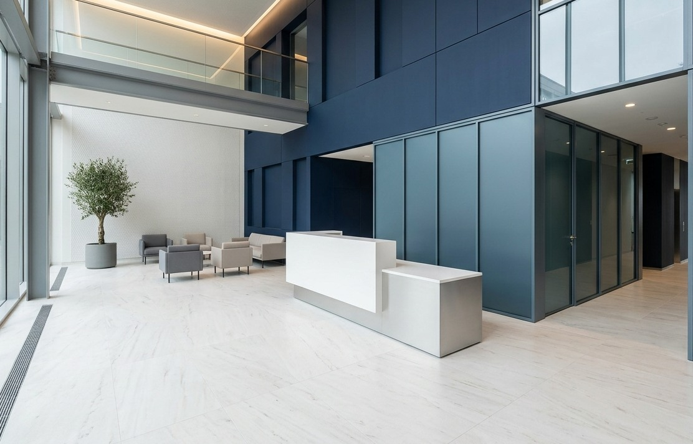
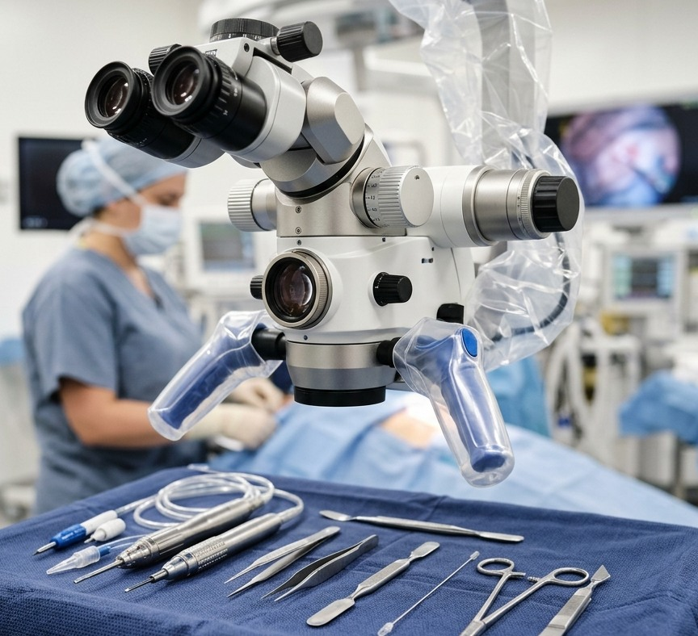
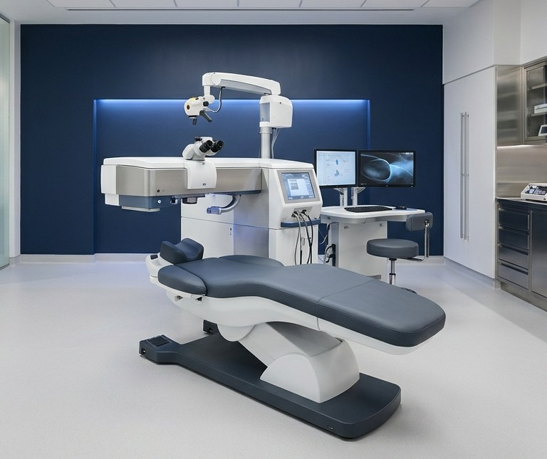
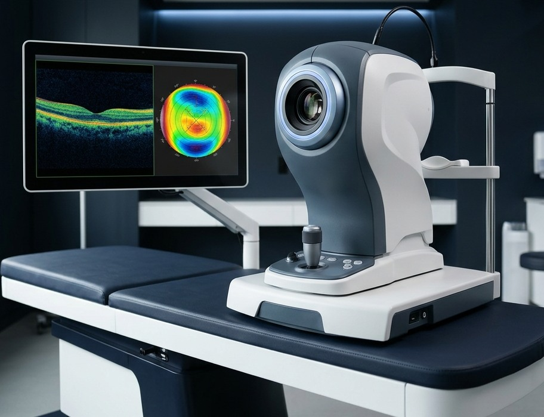
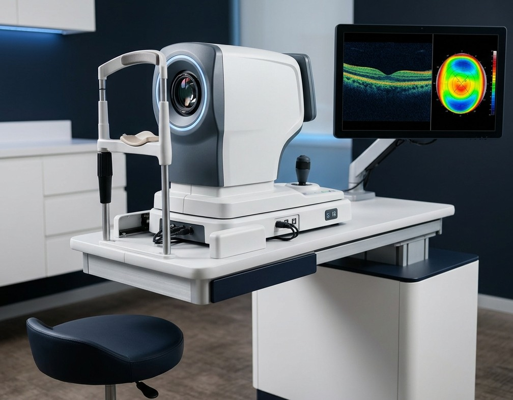

01 • Our Mission
Accessible Microsurgical Excellence
To preserve and restore sight through evidence-based diagnostics, bladeless surgical precision, and transparent communication with every patient and family.

Established in 2001 by Dr. Alistair Vance and three fellow microsurgeons, Meridian Eye Institute began with a clear conviction: eye surgery deserves a calm, dedicated environment free from the congestion of general multi-specialty hospitals.
Today, our 48,000 sq. ft. facility houses six sub-specialty ophthalmology departments, four laminar-airflow modular operating theatres, and an integrated diagnostic wing serving over 32,000 patients annually.
Meet Our Medical FacultyGuided by microsurgical accountability, diagnostic transparency, and lifelong preservation of human sight.
To preserve and restore sight through evidence-based diagnostics, bladeless surgical precision, and transparent communication with every patient and family.
To lead regional ophthalmology in clinical outcomes, zero-infection surgical standards, and continuous clinical training for the next generation of eye surgeons.
We never recommend unnecessary procedures. Every surgical plan is backed by objective OCT, topography, and biometry data shared openly with you.

01 • Anterior SegmentHigh-volume femtosecond laser and 2.2mm micro-incision phacoemulsification with optical biometry for custom Toric, EDOF, and Trifocal lenses.

02 • Laser VisionDedicated excimer and femtosecond laser suite for 22,000-point topography-guided Contoura LASIK, flapless SMILE, and ICL phakic lenses.
24/7 surgical readiness for retinal detachment, diabetic retinopathy, macular holes, and dye-free OCT-Angiography.
Longitudinal RNFL OCT nerve monitoring, Selective Laser Trabeculoplasty (SLT), and minimally invasive MIGS stents.

05 • Ocular SurfacePartial-thickness lamellar keratoplasty (DMEK/DSEK), keratoconus cross-linking (CXL), and meibography dry-eye care.
Gentle visual development care for infants and children, amblyopia therapy, squint alignment, and myopia control.
Our surgical wing features four positive-pressure modular operation theatres with 0.3-micron HEPA filtration and dedicated central sterile supply (CSSD) autoclave traceability.
Non-contact optical biometry and 22,000-point elevation mapping for zero-error lens calculation.
3D microvascular retinal and optic nerve imaging without intravenous fluorescein injection.
Continuous 0.3-micron HEPA air exchanges paired with dedicated senior recovery lounges.

Glare-free architectural lighting, high-contrast signage, step-free corridors, and complimentary wheelchair assistance.
One assigned surgical coordinator manages your pre-op clearance, insurance pre-authorization, and drop schedule.
Over 96% of our cataract and refractive surgeries require only numbing eye drops, avoiding injections or general sedation.
Every surgical patient receives direct access to our on-call ophthalmology resident and surgeon team after discharge.
99.4% target visual acuity outcome rate.
Audited annually for sterilization & safety.
Published in international eye journals.
Verified satisfaction across all 6 units.
Complete your details below and our surgical coordinator will confirm your slot.